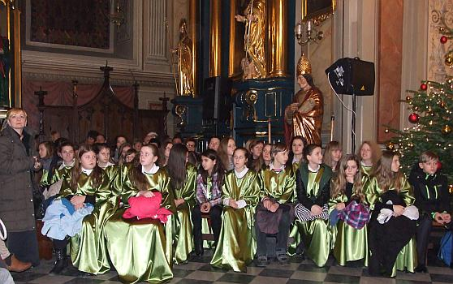
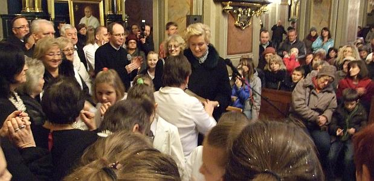

A tymczasem w Cameracie...
.
2014-01-05
Dla nas, to dzisiaj drugi koncert. Przychodzimy już o 17.00, żeby wszystko przygotować, ponieważ to nasz chór jest organizatorem tego koncertu. Ustalamy wszystko z panią dyrygentką Izabelą Szotą, aby nie było żadnej pomyłki.
Rozpoczynają krótką próbę z nagłośnieniem.
Kolejność koncertu jest następująca:1. Klemenciaki
2. Chór Małych ludzików
3. Chór Lutnia z Wieliczki
4. Chór Gaudium z Kłaja
5. Tutte le Corde z Gdowa
6. Roksana Sadowska
7. PSM I st. z Gdowa
8. Zespół Tormento
19. Zespół Yanabanda
10. Chór Camerata z Wieliczki
11. Chóry tutti – „Triumfy Króla Niebieskiego”, „Bóg się rodzi”

Całość przygotowała i prowadziła dyr. Izabela Szota.

© Stowarzyszenie Muzyczne Chór Camerata Wieliczka
Projekt i wykonanie:  Prowadzenie strony: Małgorzata Wysocka-Cebula
Prowadzenie strony: Małgorzata Wysocka-Cebula